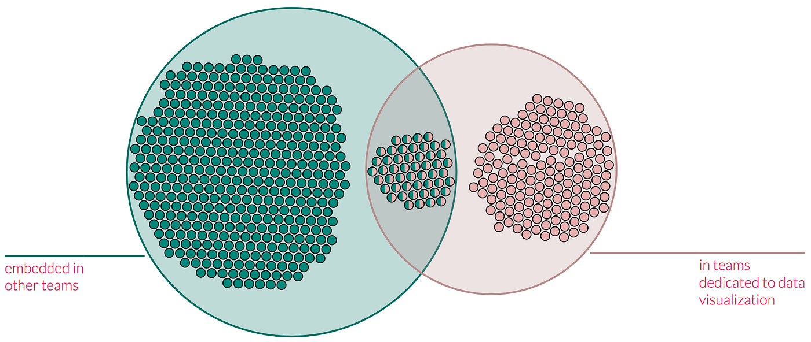
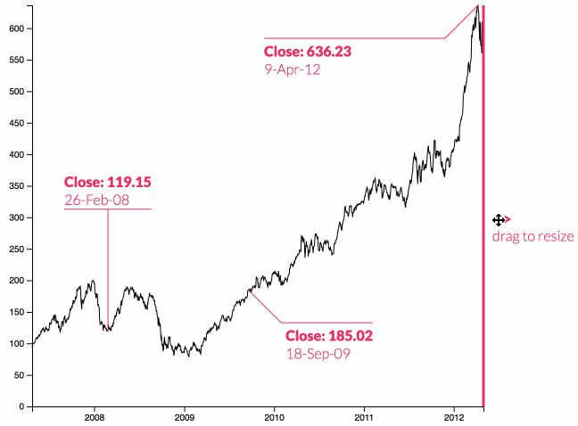

I’m convinced that annotations are where we’re going to see the next wave of innovation in data visualization. I’ve been thinking about annotations in large part because Susie Lu released d3-annotation (and later, react-annotation for data visualization libraries using React, like my own Semiotic). d3-annotation and react-annotation (I’ll refer to both of them as “d3-annotation” throughout this piece) are libraries for deploying annotations with your data visualization products that are as easy and effective as Susie’s d3-legend library.
They present a clean model of an annotation as a multi-part graphical object consisting of a subject, connector and note. Within that simple definition resides a whole host of complex forms suitable for the majority of chart types out-of-the-box while remaining extensible for more novel chart types. If you haven’t read her documentation for d3-annotation, stop reading this and go read about it in her words. If you have, then perhaps like me you’re wondering what this means for data visualization.

I’m lucky, I work about five feet away from Susie, so I’ve had a chance to play with the library — and more importantly to talk with her about annotations — for a while now. And I feel that if we begin to seriously think about annotations and integrate them into our practice, that we will see a revolution in data visualization impact. People have made annotations to their charts but until now they haven’t been able to create them efficiently and easily. It’s the same situation we were in before D3 or ggplot dropped: people were able to make data visualization products before but now it’s easy to make data visualization, and as a result more people are exploring the form.
Anyone who’s worked with modern data visualization knows that annotations only show up, if they do, later and with much effort. There are some existing libraries that allow you to annotate a graph, and some charting libraries have a few functions built in, but they are still closer to the bespoke or on-rails experience that typified earlier data visualization. With d3-annotation, we have access to something approaching an implementation of a Grammar of Annotations. The XML composition available in react-annotation gives even more expressivity.
Up until this point, everything that we did that in chart-space was data visualization. If I wanted to add annotations to a chart, I would pluck some of the data out and label it, or painstakingly integrate something like the excellent swoopyDrag.js. The material for these annotations is usually an equally hand-crafted dataset of annotations in whatever format in my whimsy I thought annotations should take at that moment. That’s not maintainable or extensible and that’s why I think we only see really robust annotation in the hand-crafted data visualization products. I should instead be in the same production mode and be in the same state of mind in making or considering annotations as I was in making or considering the data visualization I was annotating.
It may seem like I’m splitting hairs. After all, annotation is just data visualization of metadata. And a single annotation is simply a few graphical elements on a chart, like a single element of a data visualization. And D3 already has a well-liked axis component and legend plugin, so it’s not like something in that sphere isn’t already highly adopted in the ecosystem. But annotations aren’t data visualization. Data visualization really is the representation of data in graphical form, using channels like color or size or position to encode some dimension of the data. In contrast, annotations exist at the interface between data and communication.
Data visualization can exist without annotations but annotations cannot exist without the data visualization to annotate. As such, it presents an opportunity for innovation in data visualization aspects that emphasize storytelling, rhetoric and impact. These are features more common in data visualization in journalism, where the hand-crafted nature of each article allows for more investment in those bespoke annotations I refer to above. In contrast, these areas are particularly lacking in data visualization in industry. As it stands, the closest thing to annotation we see in industry dashboards is a nice title or a good tooltip.
Finally, I would argue that much of what we think of as data visualization is really annotation. As I thought about annotation I challenged myself to think of where a library like d3-annotation might be applied in more exotic charts. It’s easy to see how annotations can help a time series or bar chart, but what is the annotation inflection point in a treemap? What I realized, and what lead me to the Venn Diagram that headlined this piece, is that so many of the elements that make up charts that we think of as data visualization are more appropriately framed as annotation. Take a circle pack, which encodes hierarchical data as nested circles (like a 2D Russian nesting doll).
The above circle packs both use the same dataset: a collection of students split by ethnicity, gender, socioeconomic status and final grade. I created the one on the left as an example of how to use the layout in D3. It was meant not to be a final product but rather to demonstrate a few strategies to maximize the circle pack’s strengths and obviate its weaknesses. It uses labels crudely, because labeling circles is hard, and color (for gender and ethnicity) and lack of color to differentiate between a categorical container (which have no outlines) and a student (which do but are not filled).
I was grudgingly happy with it, especially in its role as a tech demo to help advanced D3 users better understand how to deploy a circle pack. But in comparison to the chart on the right, it seems a crude gadget designed only to impress people with its visual complexity. Using d3-annotation to represent the containers in a circle pack took less time and effort than painstakingly creating custom rules and yet the results were exponentially better.
Partly that’s because of the technical capabilities of d3-annotation but mostly it’s because I was working on it while thinking of annotations. Rather than thinking of how I might use the available channels of a circle to encode information, I was thinking about how I would label groups of students, and how I might differentiate those labels. It put me in mind of wondering how people could quickly and easily read the chart. Annotations are like simple sentences with a subject and a predicate; making them makes me more interested in communication than I am when I’m instantiating simple lines and circles.
As a result I spent less time while still making a better chart. I’ve noticed that by integrating d3-annotation into my work the data visualization products I build are better and in some cases seem to be a different class of product. I would argue that annotations make charts better but they also make some charts into schematics, and that’s an exciting class of data visualization product to be able to create as quickly and simply as I’ve been able to create charts with D3.